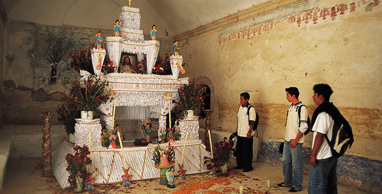

En esta localidad, ubicada a 45 km al suroeste de la capital poblana, sus habitantes elaboran asombrosas ofrendas de “cabo de año”, dedicadas a honrar a quienes fallecieron antes del 1 de noviembre.
En esta interesante población indígena, ubicada entre las estribaciones de la Sierra Mixteca y el volcán Popocatépetl, a 45 km al suroeste de la ciudad de Puebla, se representa entre el 1 y 2 de noviembre uno de los más impresionantes despliegues rituales para honrar a los difuntos en el centro de México. Hacia allá nos dirigimos para admirar los hermosos altares que han hecho célebre a este lugar, independientemente de su importancia histórica como antigua guarnición azteca y por el espectacular convento franciscano del siglo XVI.
La fiesta de muertos es la más importante de Mesoamérica y tiene una raíz fundamentalmente prehispánica, a decir del arqueólogo Eduardo Merlo, experto en el tema. Se trata de un antiguo rito de cosecha cuyo tiempo de celebración se hizo coincidir, por los frailes españoles, con la de los fieles difuntos del 2 de noviembre en el calendario católico. Pero los muertos conservaron su representación milenaria y han sido el pretexto de la comunidad para fortalecer su identidad y compartir los frutos obtenidos de la tierra. Los difuntos son la semilla de la que ha de germinar simbólicamente la planta de sus descendientes.
Sus ofrendas mortuorias
Éstas definen un peculiar estilo que distingue a Huaquechula de otros lugares en donde se lleva a cabo esta festividad, y es el resultado de fusionar la tradición ornamental prehispánica de la región con la estética de los altares de Jueves Santo de la tradición católica; de ahí su sorprendente aspecto monumental predominantemente blanco. Nos referimos a los altares de “cabo de año”, dedicados a aquellos individuos de la comunidad que fallecieron durante los meses previos a la celebración del primero de noviembre.
Es importante distinguir entre las ofrendas tradicionales y los altares de muerto recientes. Son estos últimos estructuras piramidales de entre tres y cuatro niveles (semejantes a un pastel de bodas) erigidas generalmente en el recibidor de las casas, a donde han de llegar las ánimas para disponer del banquete que se les ofrece.
Los altares están constituidos de:
Primer nivel, que representa el mundo terrenal, en éste se ubica la foto del familiar fallecido reflejada en un espejo, por lo que no se le ve sino indirectamente. Tal disposición recibe diversas interpretaciones. Para algunos lugareños el espejo representa la entrada al más allá, o al inframundo, según la explicación prehispanista de los guías de la localidad. Queda asumirlo también como la expresión simbólica de eternidad y de aquellos que “fueron pero ya no son”, en palabras del arqueólogo Eduardo Merlo, para utilizar una convencional forma cristiana de aludir a los muertos. En torno a la foto se reparten alimentos y objetos afines al difunto cuando este vivía; así, tenemos frutas, comida variada (no falta el mole) y bebidas tales como tequila y cerveza. La imagen del finado suele estar flanqueada por figurillas de cerámica conocidas como “lloroncitos”, que representan a los deudos sufrientes y cuyo origen también es prehispánico. De igual forma encontramos canastillas de flores y animalitos de azúcar hechos por la gente del pueblo y a los que se conoce como “alfeñiques”. Dichas figuras, entre las que se aprecian borregos, patos y burritos de delicada factura, se ofrendan especialmente para los llamados “muertos chiquitos”, los niños difuntos a quienes se recuerda especialmente el 31 de octubre. Los panes forman parte importante de la ofrenda, como las infaltables hojaldras pringadas de ajonjolí tostado que representan la calavera cruzada por un par de tibias. También hay piezas semejantes a un muerto yacente, cubiertas de azúcar colorada que simboliza la sangre (¡riquísimas!), así como otros más en forma de moño que simula una calavera muy simplificada vista de frente. Todos los elementos de azúcar y panadería enriquecieron a las ofrendas durante la Colonia.
El segundo nivel representa el cielo, en donde es posible reconocer angelitos, y a la Virgen María. La tela de satín blanco suele estar dispuesta en forma de caprichosos pliegues que semejan nubes. Con frecuencia se observa la incorporación de elementos diversos de la liturgia católica como el cáliz con la hostia y ceras de diversos tamaños. La modernidad ha llevado a sustituir las velas por luces de neón blancas.
El tercero o cuarto nivel simboliza la cúspide celestial, con la presencia invariable de un crucifijo que preside desde lo alto toda la estructura, rematando un espectáculo visual de indudable belleza.
Los distintos niveles están soportados generalmente por columnas de estilo barroco estípite (pilastra en forma de pirámide truncada, con la base menor hacia abajo). Es admirable el lujo de detalle propio de una mentalidad que adaptó las expresiones plásticas de la herencia colonial para manifestar un abarrocado gusto estético.
Son los “altareros” los encargados de confeccionar la ofrenda. Es a estos especialistas a quienes se contrata para hacer la instalación y en quienes se sedimenta la tradición material de las características formales de estos altares y cuyos precios oscilan entre los 3,000 y 15,000 pesos, dependiendo del tamaño y la riqueza del ornato.
Ánima sola
No debemos ignorar esta pequeña ofrenda dispuesta por manos caritativas y celosas de la tradición, que suelen colocar altarcitos a escala en los espacios públicos para honrar a aquellos difuntos que no tienen familia que les recuerde. Esta costumbre, ahora poco difundida, cumplía antiguamente la doble función de ofrendar a los muertos olvidados e iluminar la calle en aquellos tiempos en que no había luz eléctrica.
